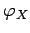

Inhalt Index DeskTop Bronstein

 Geometrie Sphärische Trigonometrie Berechnung sphärischer Dreiecke Orthodrome
Geometrie Sphärische Trigonometrie Berechnung sphärischer Dreiecke Orthodrome


Für die Schnittpunkte  und
und  einer Orthodrome mit dem Breitenkreis
einer Orthodrome mit dem Breitenkreis  ergibt sich gemäß (3.230):
ergibt sich gemäß (3.230):
Nach der NEPERschen Regel gilt für die beiden Schnittwinkel und unter denen eine Orthodrome mit dem nordpolnächsten Punkt  den Breitenkreis
den Breitenkreis  schneidet:
schneidet:
| (3.237) |
Für den minimalen Kurswinkel muß das Argument in der Arkussinusfunktion hinsichtlich der Variablen  extremal sein. Man erhält: d.h., in den Schnittpunkten mit dem Äquator ist der Betrag des Kurswinkels minimal:
| (3.238) |